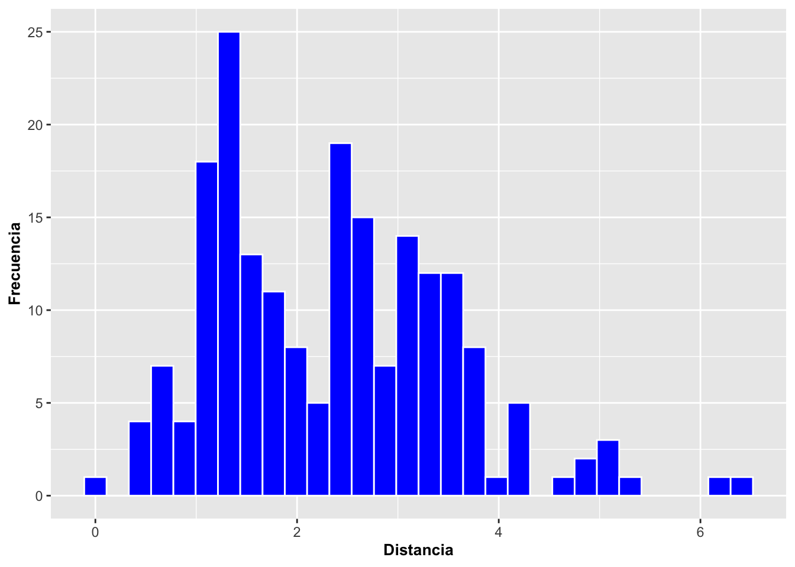
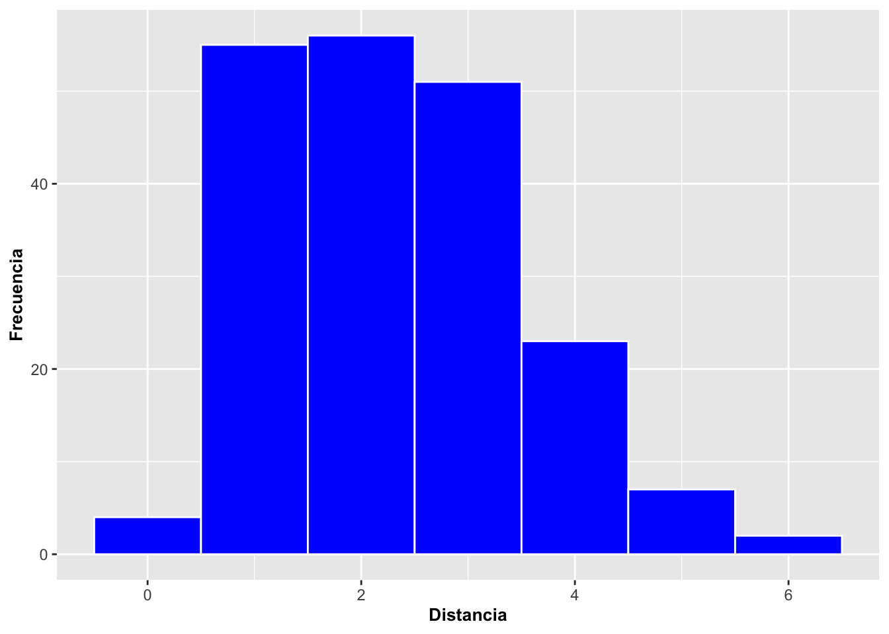
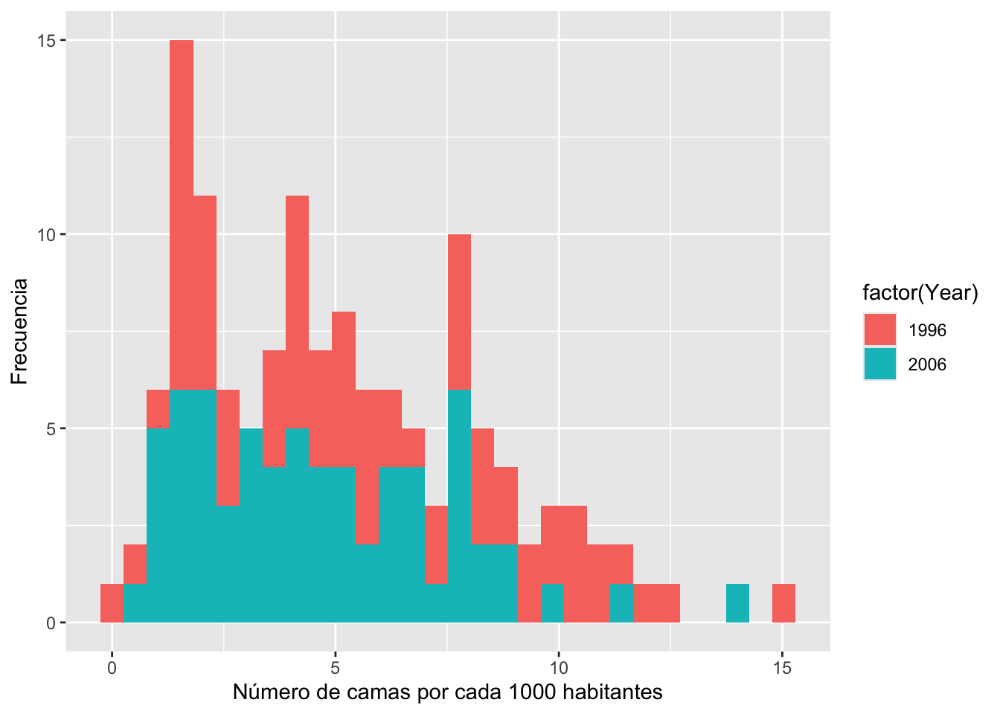
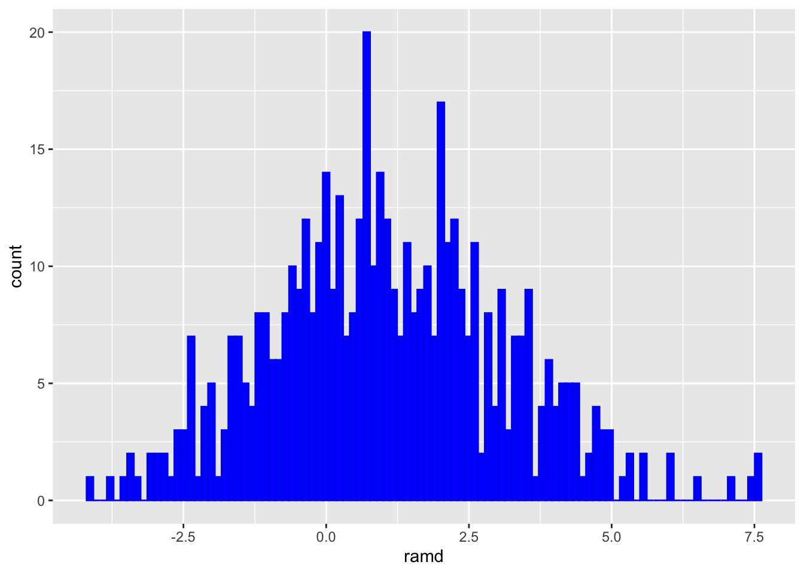
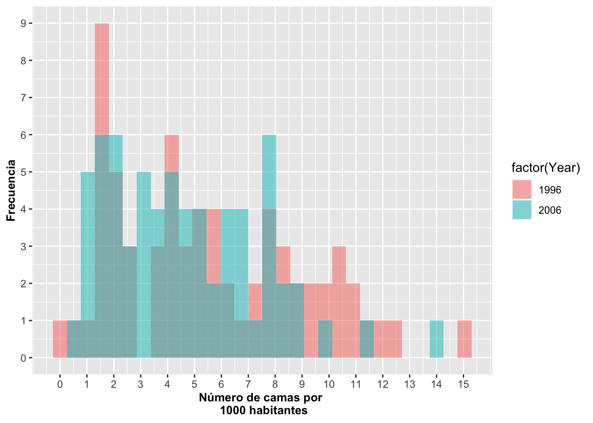
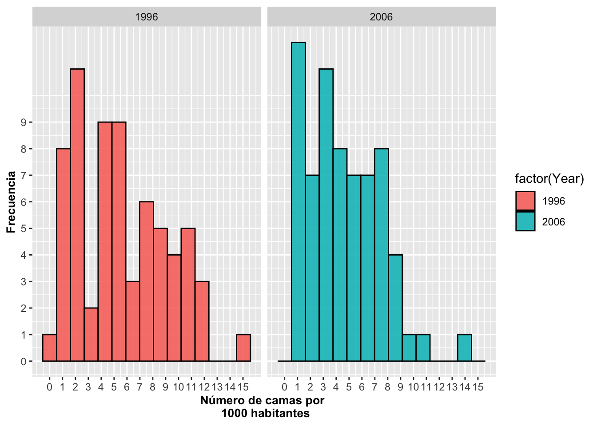
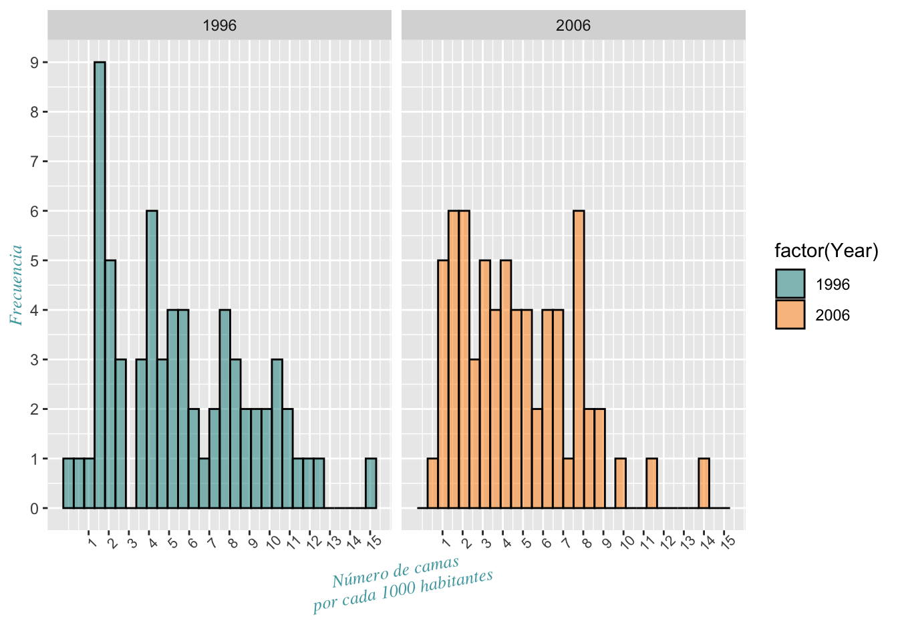

Fecha de la ultima revisión
## [1] "2020-08-27"Un histograma es una representación gráfica de los datos agrupados en compartimentos o bins. Estos compartimentos incluyen individuos con factores o agrupaciones de valores similares o cercanos numéricamente. Subsiguiente a la determinación de los compartimentos, se suma la cantidad de observaciones para cada uno de ellos. Un histograma es un tipo de gráfico muy común para visualizar la dispersión de esos datos. Continuaremos con el ejemplo de Dipodium para demostrar la función de geom_histogram a continuación.
En el primer caso de geom_histogram la cantidad de observaciones (datos) se suma de acuerdo a la posición de los compartimentos o bins.
En el segundo caso, para mostrar menos barras y ver la agrupación por grupos de 2, se escribe con geom_histogram (binwidth=1). Como se puede apreciar, el número de compartimentos se cambia utilizando el parámetro binwidth, donde su valor representa el ancho del compartimento (en nuestro caso es igual a 1). El número de bins predeterminado es 30, pero no necesariamente todos tendrán una barra ya que eso depende de la distribución de los datos. Cada barra representa la frecuencia de observaciones en la categoría a un metro de distancia. En ambos casos se usó color=white (o sea, color blanco) para poner una línea blanca alrededor de cada barra y así diferenciar mejor los grupos o bins. Nota que el programa retorna el mensaje stat_bin() using bins = 30. Pick better value with binwidth. Esto porque se acepto la cantidad de compartimiento prederminado.
DW=dipodium # este archivo de datos se encuentra en el paquete "ggversa"
a=ggplot(DW, aes(Distance))
a+geom_histogram(color="white", fill="blue")+
labs(x="Distancia", y="Frecuencia")+
theme(axis.title=element_text(size=10,face="bold"))## `stat_bin()` using `bins = 30`. Pick better value with `binwidth`.
Este histograma demuestra las distancias de las orquídeas Dipodium roseum a los árboles más cercanos. Esta especie de orquídea es parasítica de hongos/micorrizas y no produce fotosíntesis. La hipótesis es que las micorrizas, hongos, reciben nutrientes de las raíces de los árboles y los nutrientes son transferidos a las orquídeas a través de las micorrizas. A consecuencia, se debería hipotéticamente observar una distancia óptima de la orquídea a los árboles que sostienen las micorrizas si la hipótesis tiene alguna veracidad. Como se explicó antes, en el segundo gráfico, se cambió el binwidth a 1, que representa en este caso la distancia de 1 metro, y los bins van de -.5 a .5 m., el segundo bin de >0.5 a 1.5 metros y así sucesivamente.
DW=dipodium
a=ggplot(DW, aes(Distance))
a+geom_histogram(binwidth=1,color="white", fill="blue")+
labs(x="Distancia", y="Frecuencia")+
theme(axis.title=element_text(size=10,face="bold"))
En el siguiente gráfico, vemos la frecuencia de número de camas de hospital por cada 1000 habitantes para 67 países utilizando la base de datos Camas_Hospital. Se hizo con la información que estaba disponible solo para los años 1996 y 2006. Tenemos dos gráficos solapados para visualizar si la distribución ha cambiado de entre el año 1996 y 2006. Note que las frecuencias del 2006 aparecen sobre las del 1996.
## Pais Year Poblacion Camas
## 1 Armenia 1996 3173425 7.13
## 2 Australia 1996 18311000 8.50a=ggplot(Camas_Hospital, aes(Camas, fill=factor(Year)))
a+geom_histogram(stat="bin")+
xlab("Número de camas por cada 1000 habitantes")+
ylab("Frecuencia")## `stat_bin()` using `bins = 30`. Pick better value with `binwidth`.
Se demuestra también cómo modificar la escala, primero con un método poco práctico numerando en el eje de Y cada valor donde queremos una línea. Note que se excluye el número 10 y por eso no aparece en el eje de Y la función es scale_y_continuous(breaks=c(x,x,x…x). En el eje de X se numera también pero esta vez se define la escala con scale_x_continuous(breaks=c( ), y c(x:xx) con un valor inicial de 1 y final de 15 para identificar cual son los valores que uno quiere en los ejes; eso es más práctico e incluye al valor 10. También se modifica la información de los ejes usando xlab y ylab, de manera tal que la descripción de la columnas se pueda presentar de forma específica y así hacer la información más clara para propósitos del gráfico. =
a=ggplot(Camas_Hospital, aes(Camas, fill=factor(Year)))+
geom_histogram(stat="bin", alpha=0.5)+
scale_y_continuous(breaks=c(0,1,2,3,4,5,6,7,8,9,11,12,13,14,15))+
scale_x_continuous(breaks=c(0:15))+
theme(axis.title=element_text(size=10,face="bold"))
a## `stat_bin()` using `bins = 30`. Pick better value with `binwidth`.
Podríamos pensar que, debido a que las frecuencias están solapadas, es difícil tener una buena apreciación de la distribución de los datos. Para comparar las frecuencias entre los grupos con más facilidad, se pueden diferenciar las frecuencias con 3 colores; en este caso el color azul para el año 2006, el color durazno para el año 1996, y el color grisáceo para las frecuencias que se solapan con ambos años. Se usa position=identity y alpha= pata modicar la intensidades de color de la barras. Ahora vemos que, por ejemplo, en el año 1996 la frecuencia más común en los países era de menos de 2 camas por 1,000 habitantes, y que ya para el año 2006 ya era de 2 y 8 camas por cada 1,000 habitantes.
a=ggplot(Camas_Hospital, aes(Camas, fill=factor(Year)))
a+geom_histogram(stat="bin", alpha=0.5,
position="identity")+
xlab("Número de camas por \n 1000 habitantes")+
ylab("Frecuencia")+
scale_y_continuous(breaks=c(0:9))+
scale_x_continuous(breaks=c(0:15))+
theme(axis.title=element_text(size=10,face="bold"))## `stat_bin()` using `bins = 30`. Pick better value with `binwidth`.
a=ggplot(Camas_Hospital, aes(Camas, fill=factor(Year)))
a+geom_histogram(stat="bin", alpha=0.9,
position="dodge")+
xlab("Número de camas por \n 1000 habitantes")+
ylab("Frecuencia")+
scale_y_continuous(breaks=c(0:9))+
scale_x_continuous(breaks=c(0:15))+
theme(axis.title=element_text(size=10,face="bold"))## `stat_bin()` using `bins = 30`. Pick better value with `binwidth`.
Otra alternativa es usar dos gráficos para cada año; o sea, uno por cada grupo. En tal caso usaremos la opción facet_wrap. facet_wrap se explican con más detalle más adelante. Podemos cambiar el color de las barras usando scale_fill_manual; en nuestro caso, cyan4 para el 1996 y darkorange para el 2006. Además, note que con scale_color_manual podemos cambiar la línea alrededor de las barras; en nuestro caso la cambiamos a negro o black.
a=ggplot(Camas_Hospital, aes(Camas, fill=factor(Year),
color=factor(Year)))
a+geom_histogram(stat="bin", alpha=0.5)+
xlab("Número de camas \n por cada 1000 habitantes")+
ylab("Frecuencia")+
facet_wrap(~Year)+
scale_y_continuous(breaks=c(0:9))+
scale_x_continuous(breaks=c(1:15))+
scale_fill_manual(values=c("cyan4", "darkorange"))+
scale_color_manual(values=c("black", "red"))+
theme(axis.title=element_text(family="Times",size=10,face="italic"))+
theme(axis.title.x=element_text(angle=180))+ # NOTE the x legend text
theme(axis.text.x=element_text(size=5, angle=90))## `stat_bin()` using `bins = 30`. Pick better value with `binwidth`.
ggplot(el archivo de datos, aes(la variable continua))